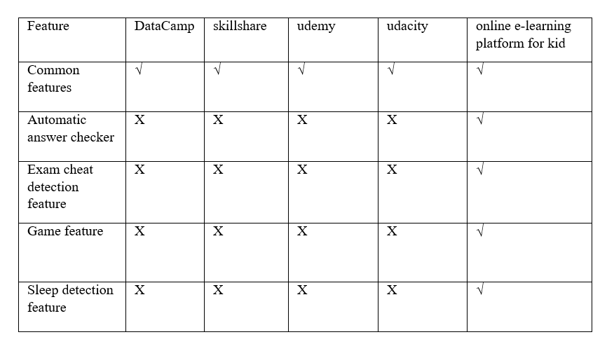

How to implement sleeping detection?
How to implement exam cheating detection?
How to automate marking answers?
How to create artificial level intelligent game?
They argue that successful teaching is crucial to a nation's social, political, and economic progress. Effective teaching is important because it is built on supporting students in advancing from one level of learning to another in a more friendly and dynamic setting, as well as getting the method right to allow students to learn independently. In the context of educational systems, AI and intelligent agents can be characterized as systems that comprehend their current state or condition, can analyze the decisions open to them to advance, and can prefer the best course of action to fruitfully achieve their principle or goals [1]. In an online teaching situation, the students listen to lessons it is very important. Teachers don't know they listen carefully. There are many apps and web servers so, they can connect with the teacher by using from that system. Example as Edsy [2], uQauli [2], Google classroom [3], edX [3], Duolingo [3] etc. are e-learning systems. Organizations/educational institutes always depend on the grading system through examinations. However, most of the examinations are objective. The paper presents a method for assessing students in e-learning courses in which the teacher enters the question, the answer, and the number of essential keywords required and expected in the given answer. If the keywords are present in the given answer, they are checked directly. Edit distance is used as a similarity metric in the scoring. Edit distance determines the smallest amount of changes that must be made to the student answer in order for it to be similar to the desired answer, but it ignores other factors of similarity and synonyms. The approach of creating vectors from the keywords collected from the answer is discussed in this work. Questions, responses, and intended keywords must all be entered by the teacher. The 0/1 vectors are created by comparing these keywords to the keywords in the predicted answer. The similarity is checked using the cosine similarity and term frequency approaches. There is no provision for partial marking because keyword matching is based on a score of 0 or 1. M. Ramamurthy and K. Krishnamurthi. I've proposed a system that focuses mostly on language-dependent aspects. Following the NLP pre-processing, answer vectors such as noun–verb, noun–verb–adjective–adverb, noun–verb synsets, and noun–verb–adjective–adverb synsets are constructed based on TF / IDF. Marks are assigned by utilizing cosine similarity to compare these vectors to the expected answer vectors. For the purpose of calculating the similarity score, the student answer and expected answer are broken down into word vectors in the article. Every cell I j) of the similarity matrix indicates the similarity score of the ith vector of student answer and the jth vector of predicted answer. Pairwise comparisons of the student answer and predicted answer vectors are used to populate the similarity matrix. The maximum similarity score is taken into account for each student's answer vector, and the aggregate of all such values determines the student's final grade. They employed word order similarity to calculate similarity between two vectors. Students must respond in normal language to short and open-ended questions. The students need to choose some of the keywords from the keyword list provided by the teacher and draw a concept map using chosen keywords. The expected and student's map is compared by Wu and Palmer similarity measure which considers the semantic aspect of a concept map. They have not generated the concept map automatically from the natural language answers instead they have taken the concept map as input from teacher and student. In the paper, the assessment is carried out by doing pretreatment to the answers with the help of NLP, and generating the concept maps for the same. The students must select some keywords from the teacher's keyword list and generate concept map based on their selections. Wu and Palmer similarity metric, which considers the semantic component of a concept map, is used to compare the expected and student's maps. Instead of automatically generating the concept map from the natural language replies, they used the concept map as input from the teacher and student. The assessment is carried out in the paper by using NLP to preprocess the answers and then generating the concept maps for the same. Three elements are taken into account when determining the final score after the concept map is created. First, compare the predicates of both the expected and student answers, then analyze the hierarchy of relevance of the concepts, and last use Wordnet to look up synonyms. The application is effective since it does not take into account mathematical formulas, concise descriptions, examples, or issues with statement formation identification. However, in majority of the works, only 1:1 keyword matching was done, and the synonyms terms included in the answers were not identified. As a result, the idea of building and implementing an AI-based answer verifier to automatically do the task of evaluator for objective answers with the standard answer can be saved in the database with descriptions and keywords came to mind. The AI may then evaluate each response by comparing the keywords or synonyms to the standard response. If all of the qualifications are met, the artificial intelligence-based answer verifier can evaluate the replies.
When learning is done in an enjoyable setting, it is more effective. Teachers, students, and the media all play a role in whether or not learning activities are enjoyable. The three elements are essential for kids' learning progress.
Video games, on the other hand, have a significant potential to be useful due to their various age groups. Video games can be a useful medium for delivering study material for online education platforms if they are developed and used effectively. It has been demonstrated in past studies that learning while playing a game can increase students' knowledge and study habits.
Students may learn while having fun with an educational game. Gameplay is one of the most important aspects of the game development process. The core of a game is its gameplay, which may be used to gauge the game's quality. There are two systems that determine gameplay: the first must receive input and produce output in line with the game rules, and the second must constantly check every element of the game and assess all of the player's inputs. The participants in this study are primary school children. They would also prefer to play games with more appealing elements so that they can play the game more actively. Questionings, findings, construction, interaction, and having fun are all ways for students to learn. As a result, using games as a study medium is a wonderful way to alleviate children's aversion to studying because it allows them to connect and have fun while learning new things. This demonstrates how using video games as a teaching approach can improve students' math ability.
In the current state of the world so much people interested in online learning. But most of the teachers, lecturers and institutes using online meeting apps to reach their students. Also, little amount of people especially in Sri Lanka using online learning platforms. When we consider about international users some of the most popular platforms are DataCamp, Udemy, Udacity and skillshare etc... In most of them they focus on how to deliver the lectures, how to let students to practice skills like coding and how to check students’ knowledge. But when checking students’ knowledge, they only have method to do simple quizzes. So, if teacher wants to do exams, they have to give question papers to students and ask them to upload a photo of the answer sheet. There are some problems with that method.
Students can cheat by using internet or books to find answers.
There are not doing tests on time.
Teachers have manually checked each students answer sheet.
So we have some solutions for these problems. In this online e-learning platform for kids application system can monitor students’ behavior while lecture is happening. And if some student doing something other than focusing on lecture likes sleeping, teacher can be notified. Teachers can arrange exams in app itself and there are features to identify exam cheating behaviors. And also system can check the answers automatically for both MCQ and subjective answer questions and generate results instantly without human errors.
This application is focusing on primary grade kids. So there is a method to learn subjects like math easily and attractively for kids with a game. This feature designed to teach math while playing and kids never getting bored because there are some levels and when level increasing difficulty is also increasing. Designed with some attractive graphics and colors to keep children mind focused.

Main Objectives
There are 5 main objectives in our research product.
Face Recognition
Sleep Detection
Exam Cheating Detection
Auto Answerer Checking
Gamification
Specific Objectives
Build a dataset from Image collection
We got grade 4-5 students' images on the internet. After that, we create a dataset using those images. Also we got data sets in internet. There are different open eyes and close eyes in different folders. There are mixes with open and close eyes. Datasets classification code use to classify datasets. Datasets are classified to open and closed eyes.
Create a suitable model for detects a student who is face and eyes.
To classify student face and actions, a CNN model should be constructed using the gathered data. For that target, I'm hoping to develop a new custom model or combine it with an existing object detection model. Also, we create models by using students’ faces and eyes.
To identify the student behavior
From the face recognition model can identify the face of the students. From the sleep detection model can identify sleeping student in online classes (Do they sleep or already sleep).
Alarm is beginning.
From this alarm, the students can identify their posture while they are sleeping already sleep.
Create a model for identify students faces.
To identify student faces, CNN model should be generated using the gathered data. For that, I used HAAR CASCADE IMAGE CLASSIFIER. HAAR CASCADE is an object detection algorithm which uses machine learning. The process of HAAR CASCADE CLASSIFIER is executed with mathematical functions.
Identify student’s exam cheating behaviors
After automatically generating a pre-trained model, I can run eye tracking analysis code with this generated model. The system analyzes real-time eye tracking using a web camera. Here, my objective is to detect exam cheating behaviors and get the output in real time. For that, I have used the Dlib pre-trained model.
Displaying output.
While students are taking online exams, the system displays each student’s average time out of the screen and Average number of times out of the screen as a notice.
Gamification
Planning Educational games for kids .It helps to process large amounts of data and grading system. Which is then providing them with updates about their learning progress?
Create intelligent games with AI
Create a grading system.
Auto select the game according to kid grading of game.
Provide accurate reports
When user trying to check results, it should give with more details as reports. And there must be an option to view results as categorized way.
User interfaces should be simple and attractive
When the user using the system, they should feel comfortable with interfaces and navigations. And also, when the displaying results, they have to be simple, understandable and attractive.
High security
Because of students entering data on time to the system, there should be high security in the system. (Means, students entering answers to the system during exams. If we lost the data somehow we can’t ask students to reenter data. )